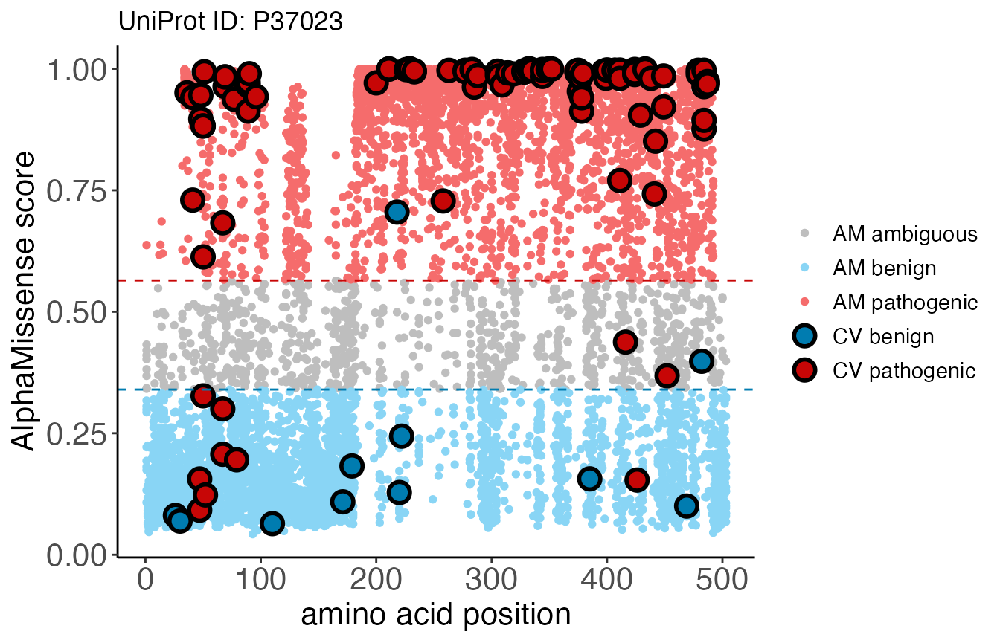

Original version: 1 May, 2024
Introduction
ClinVar is a freely available, public archive of human genetic variants that provides clinical classifications for whether a variant is likely benign or pathogenic. The AlphaMissense publication uses the ClinVar data to evaluate and calibrate the predictions generated by their model. A table containing ClinVar information for 82872 variants across 7951 proteins was derived from the supplemental data of the AlphaMissense paper, and is made available through this package for benchmarking and visualization purposes.
Access ClinVar classifications with AlphaMissense predictions
The ClinVar table can be accessed using clinvar_data()
from the database.
clinvar_data()
#> # Source: table<clinvar> [?? x 5]
#> # Database: DuckDB v1.1.0 [root@Darwin 23.6.0:R 4.5.0//Users/mtmorgan/Library/Caches/org.R-project.R/R/BiocFileCache/121787f1dafbc_121787f1dafbc]
#> variant_id transcript_id protein_variant AlphaMissense label
#> <chr> <chr> <chr> <dbl> <fct>
#> 1 chr1_925969_C_T_hg38 ENST00000342066.8 Q96NU1:P10S 0.967 benign
#> 2 chr1_930165_G_A_hg38 ENST00000342066.8 Q96NU1:R28Q 0.663 benign
#> 3 chr1_930204_G_A_hg38 ENST00000342066.8 Q96NU1:R41Q 0.0866 benign
#> 4 chr1_930245_G_A_hg38 ENST00000342066.8 Q96NU1:D55N 0.134 benign
#> 5 chr1_930248_G_A_hg38 ENST00000342066.8 Q96NU1:G56S 0.100 benign
#> 6 chr1_930282_G_A_hg38 ENST00000342066.8 Q96NU1:R67Q 0.0635 benign
#> 7 chr1_930285_G_A_hg38 ENST00000342066.8 Q96NU1:R68Q 0.0629 benign
#> 8 chr1_930314_C_T_hg38 ENST00000342066.8 Q96NU1:H78Y 0.110 benign
#> 9 chr1_930320_C_T_hg38 ENST00000342066.8 Q96NU1:R80C 0.0918 benign
#> 10 chr1_931058_G_A_hg38 ENST00000342066.8 Q96NU1:V92M 0.196 benign
#> # ℹ more rowsThe ClinVar table is now available for exploration or parsing.
Compare ClinVar and AlphaMissense
This section uses the clinvar_plot() function to
generate a scatterplot for benchmarking and comparing ClinVar
classification with AlphaMissense predictions. By default, the function
takes one UniProt accession identifier, derives AlphaMissense scores
from am_data("aa_substitution"), and pulls ClinVar
classifications from the data.frame previously obtained. Alternatively,
it is possible to pass a custom AlphaMissense or ClinVar table to the
function. See function details for more information.
clinvar_plot(uniprotId = "P37023")
#> * [12:03:05][info] 'alphamissense_table' not provided, using default 'am_data("aa_substitution")' table accessed through the AlphaMissenseR package
#> * [12:03:11][info] 'clinvar_table' not provided, using default ClinVar dataset in AlphaMissenseR package
We returned a ggplot object which overlays ClinVar
classifications onto AlphaMissense predicted scores. Blue, gray, and red
colors represent pathogenicity classifications for “likely benign”,
“ambiguous”, or “likely pathogenic”, respectively. Large, bolded points
are ClinVar variants colored according to their clinical classification,
while smaller points in the background are AlphaMissense
predictions.
We can note a discrepancy between the clinically-validated annotations and the AlphaMissense predictions around position 50. AlphaMissense seems to predict several variants in that region as likely benign, while ClinVar identifies them as pathogenic.
Because the ClinVar dataset is not exhaustive (not all proteins have been clinically-assessed), there may be proteins where information is not available. In this case, the function will provide an error.
Remember to disconnect from the database.
Session information
sessionInfo()
#> R Under development (unstable) (2024-07-31 r86945)
#> Platform: aarch64-apple-darwin23.4.0
#> Running under: macOS Sonoma 14.6.1
#>
#> Matrix products: default
#> BLAS: /Users/mtmorgan/bin/R-devel/lib/libRblas.dylib
#> LAPACK: /Users/mtmorgan/bin/R-devel/lib/libRlapack.dylib; LAPACK version 3.12.0
#>
#> locale:
#> [1] en_US.UTF-8/en_US.UTF-8/en_US.UTF-8/C/en_US.UTF-8/en_US.UTF-8
#>
#> time zone: America/New_York
#> tzcode source: internal
#>
#> attached base packages:
#> [1] stats graphics grDevices utils datasets methods base
#>
#> other attached packages:
#> [1] AlphaMissenseR_1.1.7 dplyr_1.1.4
#>
#> loaded via a namespace (and not attached):
#> [1] tidyr_1.3.1 sass_0.4.9 utf8_1.2.4
#> [4] generics_0.1.3 spdl_0.0.5 RSQLite_2.3.7
#> [7] digest_0.6.37 magrittr_2.0.3 evaluate_0.24.0
#> [10] grid_4.5.0 fastmap_1.2.0 blob_1.2.4
#> [13] jsonlite_1.8.9 whisker_0.4.1 DBI_1.2.3
#> [16] httr_1.4.7 purrr_1.0.2 fansi_1.0.6
#> [19] scales_1.3.0 textshaping_0.4.0 jquerylib_0.1.4
#> [22] duckdb_1.1.0 cli_3.6.3 rlang_1.1.4
#> [25] dbplyr_2.5.0 munsell_0.5.1 bit64_4.5.2
#> [28] withr_3.0.1 cachem_1.1.0 yaml_2.3.10
#> [31] BiocBaseUtils_1.7.3 tools_4.5.0 memoise_2.0.1
#> [34] colorspace_2.1-1 ggplot2_3.5.1 filelock_1.0.3
#> [37] curl_5.2.3 rjsoncons_1.3.1 vctrs_0.6.5
#> [40] R6_2.5.1 BiocFileCache_2.13.2 lifecycle_1.0.4
#> [43] RcppSpdlog_0.0.18 fs_1.6.4 htmlwidgets_1.6.4
#> [46] bit_4.5.0 ragg_1.3.2 pkgconfig_2.0.3
#> [49] desc_1.4.3 pkgdown_2.1.0 pillar_1.9.0
#> [52] bslib_0.8.0 gtable_0.3.5 Rcpp_1.0.13
#> [55] glue_1.8.0 systemfonts_1.1.0 highr_0.11
#> [58] xfun_0.47 tibble_3.2.1 tidyselect_1.2.1
#> [61] knitr_1.48 farver_2.1.2 htmltools_0.5.8.1
#> [64] labeling_0.4.3 rmarkdown_2.28 compiler_4.5.0